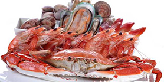
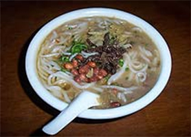
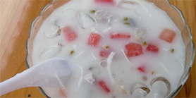
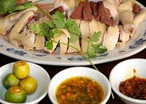
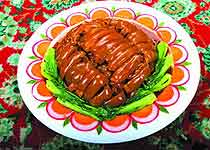
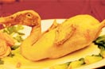
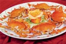
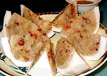
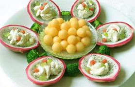

三亚
首页
景点
美食
住宿
交通
旅游攻略
三亚景点

海鲜
三亚的海鲜相当有名，来到三亚不试试这里的生猛海鲜那你的旅途将会是不完整的......

抱罗粉
抱罗粉因盛起文昌市的抱罗镇而得名，相传自明代起抱罗粉就成为抱罗镇著名四乡的美食了......

清补凉
清补凉是一种夏天清热补湿的食品，且甘甜爽口，是夏季必备的饮品。在海南的冬天也可以吃到热的清补凉......

文昌鸡
正宗文昌鸡因产地在文昌市而得名，是通特产家养鸡。色油亮，味醇香，骨软肉嫩，吃起来滑而不腻......

东山羊
东山羊产于万宁市东山岭而得名。东山羊毛色乌黑、肉肥汤浓、鲜而不膻、口感好、皮滑肉精......

加积鸭
加积鸭又称“番鸭”，红冠黄蹼，羽毛黑白相间，因琼海市加积地区饲养方法独特，出笼的“番鸭”脯大......

和乐蟹
海南著名传统名菜之一。产于海南万宁县和乐镇，以甲壳坚硬、肉肥膏多著称......

椰子饭
椰子饭是海南最具特色的一个主食，外边是椰肉，里面是粘米，加上特殊的香料放在锅里面蒸很久......

南山素斋
南山素斋颇有盛名，招牌菜有香油鳝丝、干烧鲈鱼、清炒冬虫草等。南山素斋源于上海龙华寺素斋......
三亚旅游